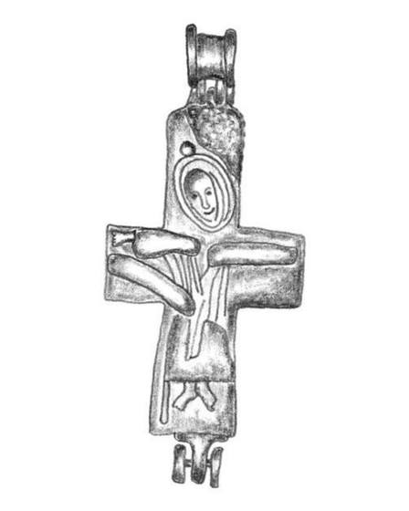
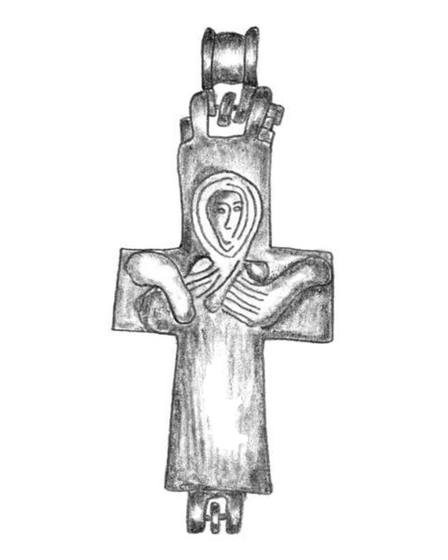

Catalog › CE-0358 · COS2022-IC-1a
Encolpion bivalv de bronz, Alba Iulia, repertoriu IC 1a.1
nedatat · Alba Iulia, Transilvania, România
double-sided reliquary cross (enkolpion), bronz; nedatat; found at Alba Iulia, Transilvania, România.




Identificare
- Categorie
- Encolpion bivalv (relicvar)
- Material
- Bronz
- Tehnică
- Turnare în relief
- Dimensiuni
- Î 65.2 × L 33.2 mm
Iconografie
- Descriere avers
- Descrierea tipului IC, după autor: Hristos răstignit, cu capul înclinat spre dreapta, cu mâinile întinse până la capetele brațelor crucii, în veșmânt larg căzut în falduri, redat schematic prin linii simple; fără busturi la capetele brațelor.
- Revers
- Maica Domnului Orantă
- Descriere revers
- Descrierea tipului IC, după autor: Sfânta Maria în poziție orantă, cu capul înconjurat de nimb; mamphorium redat schematic prin linii; fără busturi la capetele brațelor.
Datare și atribuire
- Datare
- nedatat
- Tipologie
- Cosma 2022, tip IC
Descoperire
- Localitate
- Alba Iulia
- Regiune
- Transilvania
- Țară
- România
- Context
- Necunoscut
- Coordonate
- 46.0683° N, 23.5665° E
- Precizia locului
- Doar localitatea
Păstrare și referințe
- Bibliografie
- C. Cosma, Tipuri de cruci relicvar bizantine din bronz cu figuri în relief, descoperite pe teritoriul României, în „Crisia”, LII, 2022, p. 111–140 (studiu p. 111–129, planșe p. 130–140) [Cosma 2022], p. 124, repertoriu IC 1a.1, reprodusă la Pl. 8/5 (p. 137). Piesa citată în repertoriu după: A. Dragotă, Graves with ceremonial and worship objects from the King’s Spring necropolis in Alba Iulia, Alba County, în „Slovenská archeológia”, LXV, 1, 2017, p. 163–175 (citat p. 171) [Dragotă 2017]; A. Dragotă, Dovezi ale misiunii bizantine la Alba Iulia (secolul al X-lea), în „Transilvania”, 4/2018, p. 89–96 (citat p. 92) [Dragotă 2018].
- Figura
- Pl. 8/5
- Planșe
- Cosma 2022, p. 137
- Observații
- Fără datare proprie în repertoriu; autorul datează tipul în sec. X–XI. Piesă adăugată în repertoriu separat (cod 1a.1) și reluată la Transilvania ca „1.a” (L = 6,52 cm, l = 3,38 cm, p. 125); nu intră în totalul de 53 de piese al autorului. În planșă mai apare o vedere laterală (nu este decupată). Colecția și inventarul nu sunt date în sursă. Coordonate: ale localității (aproximative), nu date în sursă. Număr în repertoriul autorului: 1a.1 (tip IC).
Citare: Corpus Encolpiorum, CE-0358, Encolpion bivalv de bronz, Alba Iulia, repertoriu IC 1a.1, --root/piese/COS2022-IC-1a/ (accesat 2026-10-20).